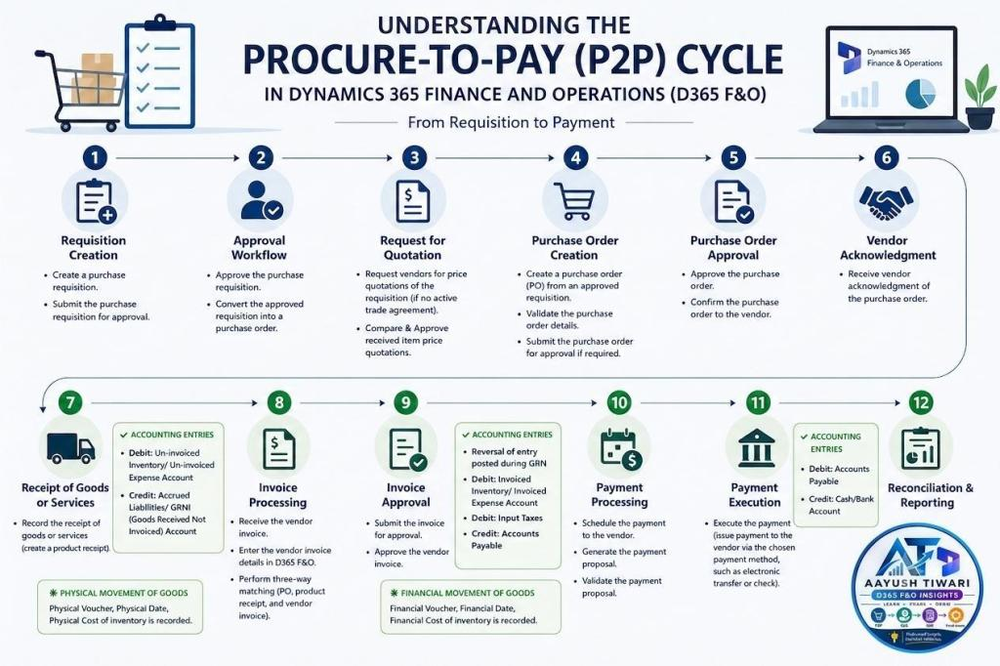

Understanding the Procure-to-Pay (P2P) Cycle in Dynamics 365 Finance and Operations (D365 F&O)
The P2P cycle is a crucial process in any organization, ensuring smooth operations from procurement to payment. Here’s a breakdown of the key events and associated accounting entries in D365 F&O:

- Create a purchase requisition.
- Submit the purchase requisition for approval.
- Approve the purchase requisition.
- Convert the approved requisition into a purchase order.
- Request vendors for price quotations of the requisition (In absence of an active trade agreement).
- Compare & Approve received item price quotations.
- Create a purchase order (PO) from an approved requisition.
- Validate the purchase order details.
- Submit the purchase order for approval if required.
- Approve the purchase order.
- Confirm the purchase order to the vendor.
- Receive vendor acknowledgment of the purchase order.
- Record the receipt of goods or services (create a product receipt).
- Accounting Entries:
– Debit: Un-invoiced Inventory/ Un-invoiced Expense Account
– Credit: Accrued Liabilities/GRNI (Goods Received Not Invoiced) Account
- Physical Movement of goods :
– Physical movement details like Physical Voucher, Physical Date , Physical Cost of inventory is recorded.
- Receive the vendor invoice.
- Enter the vendor invoice details in D365 F&O.
- Perform three-way matching (purchase order, product receipt, and vendor invoice).
- Submit the invoice for approval.
- Approve the vendor invoice.
- Accounting Entries:
– Reversal of entry posted during GRN
– Debit: Invoiced Inventory/ Invoiced Expense Account
– Debit : Input Taxes
– Credit: Accounts Payable
- Financial Movement of goods :
– Financial movement details like Financial Voucher, Financial Date , Financial Cost of inventory is recorded.
- Schedule the payment to the vendor.
- Generate the payment proposal.
- Validate the payment proposal.
- Execute the payment (issue payment to the vendor via the chosen payment method, such as electronic transfer or check).
- Accounting Entries:
– Debit: Accounts Payable
– Credit: Cash/Bank Account
- Reconcile bank statements with recorded payments.
- Generate reports on procurement and payment activities.
- Close the accounting period.
By understanding these steps and the related accounting entries, organizations can ensure accuracy and efficiency in their financial processes.